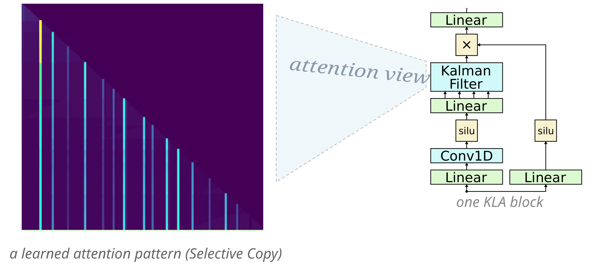
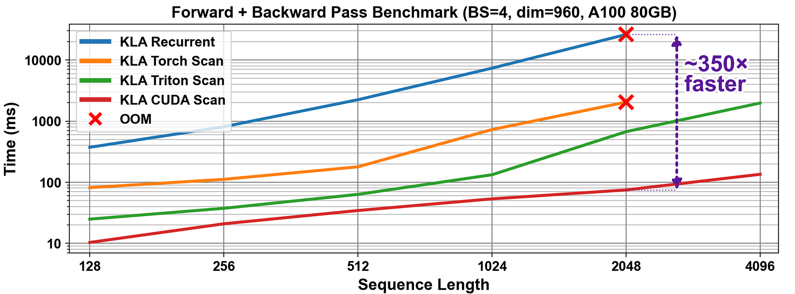
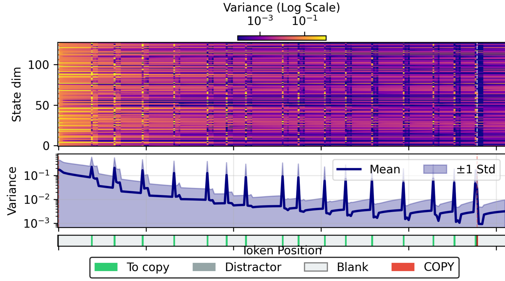
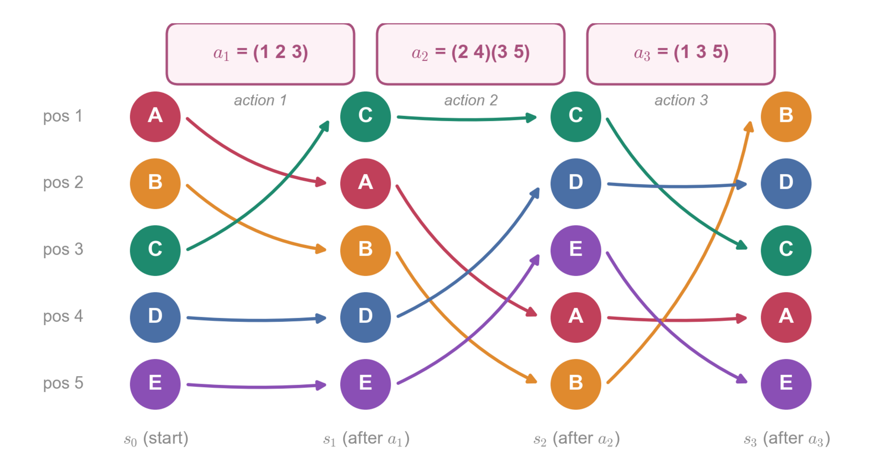
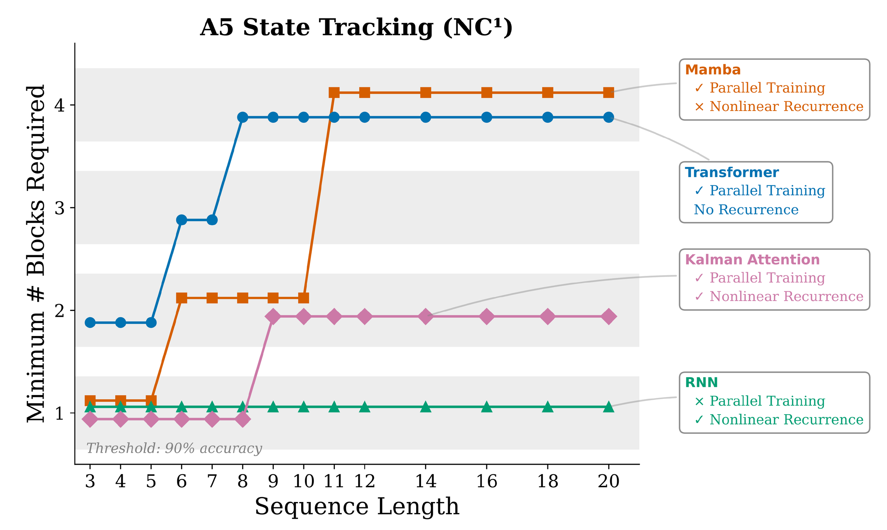
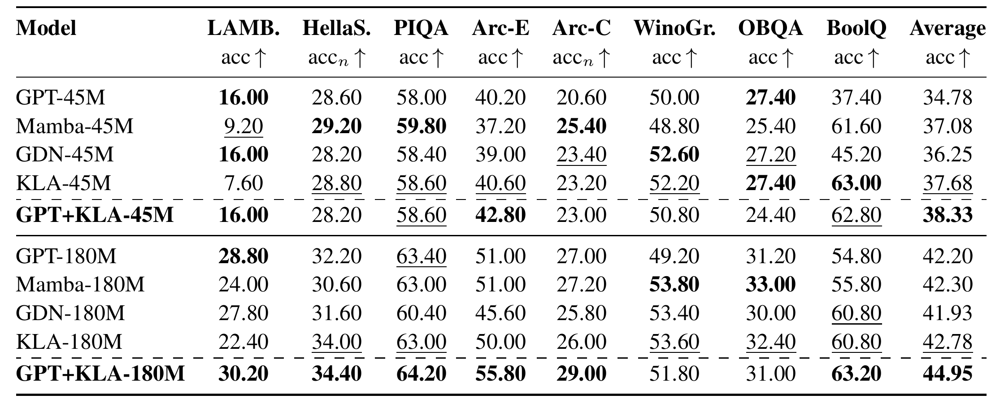
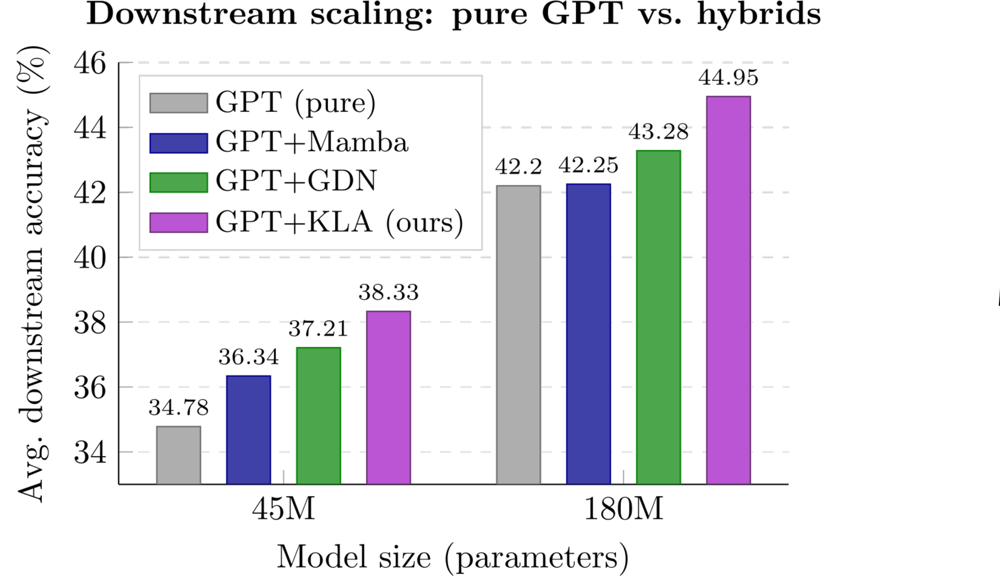

“Towards probabilistic LLMs - one Bayesian layer at a time”
University of Edinburgh, United Kingdom


The AI systems behind today's chatbots, called transformers, are powerful but grow slow and resource-hungry as the text they handle gets longer. Researchers have built leaner, faster alternatives, but these often struggle to keep careful track of information across long passages - a skill that genuine reasoning needs.
We turned to an unlikely source: the Kalman filter, a 60-year-old algorithm that estimates the hidden state of a system from noisy measurements while keeping track of its own uncertainty. It famously helped guide the Apollo missions to the Moon and remains a gold standard in engineering and neuroscience. The catch was that it seemed to work only one step at a time - far too slowly to learn from the vast text collections modern AI needs. We found that rewriting the filter in a different mathematical form reveals hidden structure that lets all its steps be computed at once, in parallel, and built this into a neural network layer we call Kalman Linear Attention.
Because the model continually reasons about its own uncertainty, useful behaviours that other systems bolt on by hand emerge on their own. It matches or improves on leading efficient models for language, and is among the first such probabilistic methods trained at large scale - a step toward AI that has a built-in sense of what it doesn't know.
State-space language models such as Mamba and gated linear attention (GLA) offer linear-complexity, parallelisable alternatives to transformers, but often lack the expressivity and robust state-tracking needed for complex reasoning. We address this by reframing sequence modeling through a probabilistic lens, with Bayesian filters as the core primitive. Classical Kalman filters provide principled state and uncertainty estimation but are typically viewed as inherently sequential. We show that reparameterising the Kalman filter in information form casts its updates as an associative scan, enabling efficient parallel training. The resulting Kalman Linear Attention (KLA) layer performs time-parallel probabilistic inference while maintaining explicit belief-state uncertainty, offering strictly more expressive nonlinear updates and gating than GLA variants while retaining their computational advantages. On language modeling tasks, KLA matches or outperforms modern SSMs and GLAs on discrete token-manipulation, state-tracking, and zero-shot commonsense-reasoning benchmarks, and is among the first stacked Bayesian-filtering primitives pretrained at the billion-token scale.
Why should I use a Bayesian Filter for Language Modelling?

While solving Selective Copying - the synthetic recall task popularised by Mamba (Gu & Dao, 2023) - KLA additionally gives us interpretable posterior uncertainty by construction, exposed as explicit uncertainty neurons. Clear patterns emerge: uncertainty spikes exactly when a useful “gold” token to be copied arrives, and in general as the context sees more informative tokens the belief sharpens.

A5 is a proxy for state tracking, popularised by Merrill et al. (2024). Intuitively it is a world-modelling problem in miniature: the world state is an arrangement of five objects, every action is a swap, and the task is to predict the world state after k actions have been applied.

Sequence length counts the number of swaps (“actions”), so the task gets harder as the horizon grows. KLA solves it at a constant depth of 1-2 blocks, whereas popular sequence models need depth that grows in proportion to the difficulty.

We stacked KLA blocks up to 24 deep - training stayed stable - and pretrained from scratch on FineWeb-Edu at 45M and 180M parameters (up to ~11B tokens). As far as we know, no stacked Bayesian filter has been trained at this scale before. Used standalone, KLA matches or beats softmax attention, Mamba and GDN on zero-shot commonsense benchmarks.

Finally, a minimal hybrid: a GPT with its last attention layer swapped for one KLA block, again pretrained from scratch. That single layer keeps recall and lifts zero-shot reasoning across the board - more than the equivalent Mamba or GDN layer. KLA complements attention rather than merely replacing it.
@inproceedings{shaj2026kalman,
title = {Kalman Linear Attention: Parallel Bayesian Filtering for
Efficient Language Modelling and State Tracking},
author = {Shaj, Vaisakh and Barker, Cameron and Scannell, Aidan and
Szecsenyi, Andras and Crowley, Elliot J. and Storkey, Amos},
booktitle = {International Conference on Machine Learning (ICML)},
year = {2026}
}